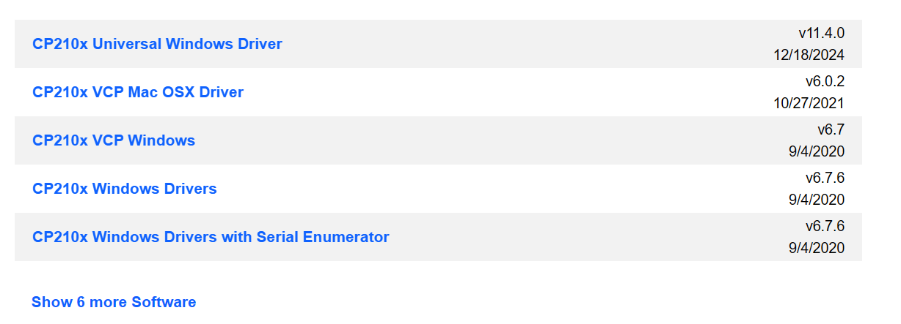
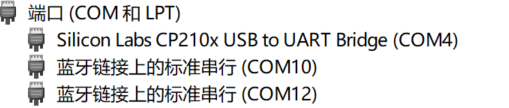
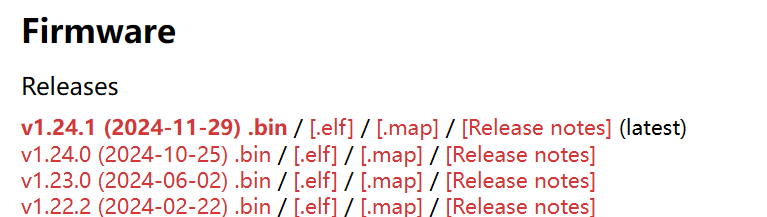
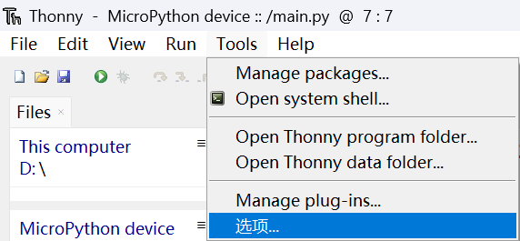
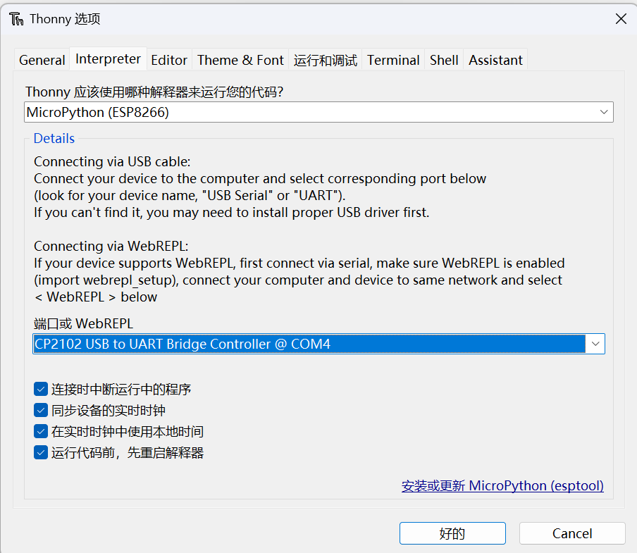
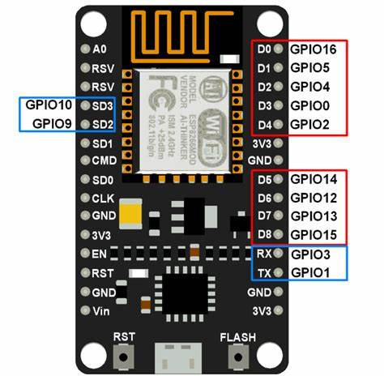

windows环境下给esp8266刷Micropython
网上的教程，包括官方的教程不太适用，自己摸索了一遍
下载安装驱动
有两种芯片，看你的小芯片上写的是CP2102还是CH340G👀（两个小按键之间），选择不同的驱动。
CP2102芯片
CP2102驱动下载地址：
https://www.silabs.com/developer-tools/usb-to-uart-bridge-vcp-drivers?tab=downloads
选择CP210x Windows Drivers下载，解压。

然后安装。
笔记本电脑选：CP210xVCPInstaller_x64.exe
台式电脑（诶？）选：CP210xVCPInstaller_x86.exe
CH340G芯片
驱动下载地址：
https://www.arduined.eu/ch340-windows-10-driver-download/
点击蓝字CH340 driver for Windows 10下载，解压。点SETUP.EXE安装。
Tips
如果你没有放大镜，看不清楚的话，你也可以两个都装，因为非常好装。
连接设备
长按Esp板子上的boot按键，同时插上电脑，并抬起按键。
同时按下组合键：“Win + R”，打开“运行”对话框，在其中输入“devmgmt.msc”，点击“确定”即可打开“设备管理器”。点开端口。应该能看到包含芯片名称的一个端口，如图

如果没有的话，首先不要怀疑驱动，建议你先多换几个USB线，我换了三根啊三根。。。
然后记住是COM几，我的是COM4，下面的步骤记得替换。
下载固件
最新固件网址：
https://micropython.org/download/ESP8266_GENERIC/
直接找到
Firmware
Releases
初学者下载最上方的bin文件即可（带latest标识）。本人下载的时候版本是v1.24.1 (2024-11-29) .bin

下载python
确保已安装Python 3.7或更高版本。虽然官网说， Python 2.7和Python 3.4以上都可以，但是你也不希望被同学知道你还在用老版本的Python吧（不是）。
Python官网：https://www.python.org/
用pip安装esptool
首先你有可能要更新pip。1
python.exe -m pip install --upgrade pip
接着1
pip install esptool
找到你Python的Scripts文件夹（里面应该有个esptool.exe），加上记住它的路径。再在后面加上esptool。
找到esptool的一种方式
cmd怎么打开
win+R打开运行，输入cmd，回车在cmd，或者Vscode bash或者Pycharm bash或者powershell或者别的里，输入1
pip --version
我这里显示了1
pip 25.0.1 from D:\GitHub\Smart-Aquaculture-esp8266\.venv\lib\site-packages\pip (python 3.10)
看到这个D:\GitHub\Smart-Aquaculture-esp8266\.venv\lib\site-packages\pip，去掉lib\site-packages\pip，换成Scripts\esptool，即D:\GitHub\Smart-Aquaculture-esp8266\.venv\Scripts\esptool。等会儿要用。
</details>
下面的.venv/Scripts/esptool替换成你的路径
因为我建了虚拟环境，就用相对路径了，所以后面就用.venv/Scripts/esptool简化写了。
对于以下两个命令，你需要更改三个地方：
.venv/Scripts/esptool改成你在用pip安装esptool一步找到esptool的路径。COM4改成在连接设备一步找到的COM几D:\software\ESP8266_GENERIC-20241129-v1.24.1.bin改成你在下载固件一步下载的固件的路径。
打开cmd，先擦除闪存1
.venv/Scripts/esptool --port COM4 erase_flash
然后烧录固件1
.venv/Scripts/esptool --port COM4 --baud 460800 write_flash --flash_size=detect 0 D:\software\ESP8266_GENERIC-20241129-v1.24.1.bin
下载安装ide
推荐thonny。
下载地址：https://thonny.org/
虽然这个软件某不可言说的方面有点抽象，但是是确实好用。也可以选择别的ide。
如图：


Hello world!
成功打开之后，Ctrl+N新建main.py文件，到了喜闻乐见的Hello world环节1
print("hello world!")
F5运行，看看能不能hello world。
Blink!

参考网址：
https://docs.micropython.org/en/latest/esp8266/tutorial/intro.html